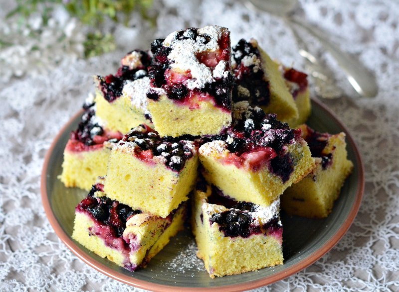

Prajitura pufoasa de fructe
| timp de pregatire |
timp de coacere |
complexitate |
| 20 minute |
30 minute |
medie |

Ingrediente:
- 8 oua
- 250 g zahar
- 100 ml ulei
- un praf de sare
- 250 g faina
- 1 lingura de praf de copt
- 2 pliculete de zahar vanilat
- 400 g de capsuni sau visine
- zahar pudra vanilat pentru decor
Mod de preparare:
-
Separam ouale, albusurile de galbenusuri si mixam albusurile pana prind
consistenta

-
Adaugam treptat zaharul, cel vanilat si mestecam pana prinde consistenta
si nu curge
- Galbenusurile le amestecam cu uleiul si le incorporam in albusuri

-
Incorporam si faina amestecata cu praful de copt, tot cu miscari de de
sus in jos. Aluatul obtinut il transferam intr-o tava cu dimensiunile de
25x35 cm, acoperita cu hartie de copt sau unsa cu unt sau ulei si
tapetata cu faina.Deasupra distribuim uniform fructele taiate bucati si
amestecate inainte cu o lingura de faina

-
Preincalzim cuptorul la 180 de grade C si coacem prajitura 25-30 de
minute

-
Dupa ce s-a racit, o taiem in forma dorita si o pudram cu zahar pudra
vanilat

Ca sa va usuram treaba va recomandam mai jos cateva magazine de unde veti gasi ingrediente mai ieftine:
kaufland.ro
la-doi-pasi.ro